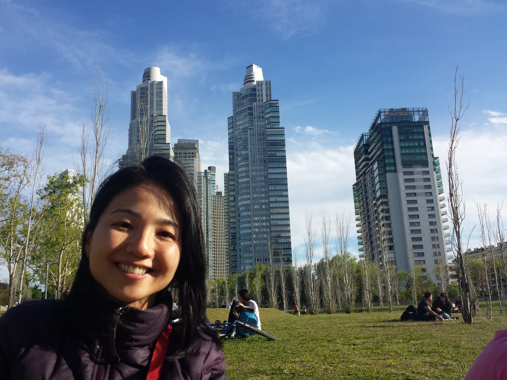

Minhas redes Sociais
Portfólio

Formação
- Administração de Empresas pela Universidade Mackenzie em 2000.
- Intercâmbio na Universidade de Hiroshima, Faculdade de Economia e Contabilidade em 2002.
- MBA em Marketing pela ESPM em 2005.
- Cursando Web Full Stack na Let´s Code pelo Programa Vem ser Tech da Ifood 2022.
Redes Sociais